×
Сайт был реализован в рамках индивидуального проекта по предмету "информатика" учеником 10 "а" класса Лопатиным Родионом. Цель - собрать информацию о футбольном клубе "Ротор" в удобном формате.
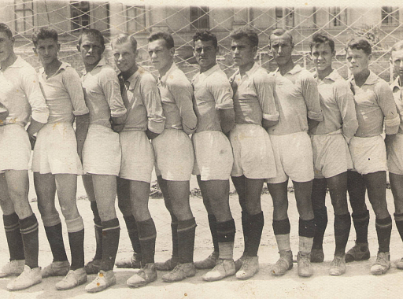
В 1929 году был основан клуб «Тракторостроитель» Сталинградского тракторного завода, с 1930 года выступал в первенстве города. Выход на союзный уровень произошел в сезоне 1936. Клуб был переименован в «Дзержинец-СТЗ», и под этим названием принял участие в розыгрыше первого кубка СССР, а затем чемпионата СССР. В 1937 году уже под именем «Трактор» команда заняла первое место в группе «Г» чемпионата СССР по футболу. Лидер «Трактора» Александр Пономарев в одном из матчей Кубка СССР, по воспоминаниям очевидцев, забил 9 мячей. Сезон 1938 года после реорганизации чемпионата СССР «Трактор» впервые провел в главном дивизионе — группе «А». Сталинградцы одержали несколько ярких побед, за 7 туров до финиша выиграли у действующего чемпиона — московского «Динамо» — и вышли на 3-е место, но провалили концовку турнира и завершили его на 12 месте. Александр Пономарев оформил хет-трики в трех матчах подряд и вошел в тройку лучших бомбардиров чемпионата. В этом турнире началась работа в «Тракторе» самобытного специалиста, самого молодого главного тренера в истории футбола СССР Юрия Ходотова.
В 1939 году к «Трактору» пришел самый большой успех — 4-е место в чемпионате. Превзойти его «Ротор» сумел лишь спустя 54 года. В чемпионате-1939 «Трактор» несколько раз выходил на первое место, выиграл у лидеров советского футбола «Спартака» и «Динамо» (дважды), удостоился оваций на главных стадионах Москвы и Ленинграда. Стиль игры «Трактора» строился на высокой скорости атаки, тройка нападения Проворнов — Пономарев — Проценко забила в сумме 33 гола, а попытки столичных клубов переманить сталинградцев были осуждены в документе за подписью Сталина.
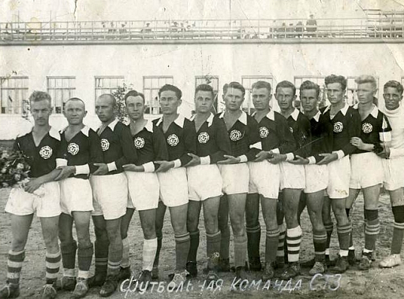
До 1969 года включительно команда выступала с переменным успехом (именуясь в течение нескольких сезонов «Торпедо»). В конце 1969 года руководством тракторного завода было принято решение распустить команду мастеров. Заводской спортклуб «Родина», в который входила футбольная команда «Трактор», продолжил свое существование, в городских и областных соревнованиях заводская команда в дальнейшем играла под названием «Родина» (в 1982 году она была переименована в «Трактор», в 1983 году выиграла чемпионат области). На уровне команд мастеров продолжила выступления команда «Сталь», сформированная на базе «Сталеканатчика» (команды Сталинградского сталепроволочно-канатного завода), выступавшего до этого в первенстве города.
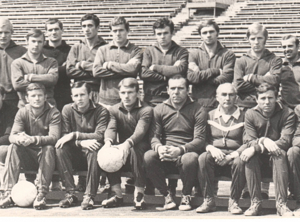
В 1929 году был основан клуб «Тракторостроитель» Сталинградского тракторного завода, с 1930 года выступал в первенстве города. Выход на союзный уровень произошел в сезоне 1936. Клуб был переименован в «Дзержинец-СТЗ», и под этим названием принял участие в розыгрыше первого кубка СССР, а затем чемпионата СССР. В 1937 году уже под именем «Трактор» команда заняла первое место в группе «Г» чемпионата СССР по футболу. Лидер «Трактора» Александр Пономарев в одном из матчей Кубка СССР, по воспоминаниям очевидцев, забил 9 мячей. Сезон 1938 года после реорганизации чемпионата СССР «Трактор» впервые провел в главном дивизионе — группе «А». Сталинградцы одержали несколько ярких побед, за 7 туров до финиша выиграли у действующего чемпиона — московского «Динамо» — и вышли на 3-е место, но провалили концовку турнира и завершили его на 12 месте. Александр Пономарев оформил хет-трики в трех матчах подряд и вошел в тройку лучших бомбардиров чемпионата. В этом турнире началась работа в «Тракторе» самобытного специалиста, самого молодого главного тренера в истории футбола СССР Юрия Ходотова.
В 1939 году к «Трактору» пришел самый большой успех — 4-е место в чемпионате. Превзойти его «Ротор» сумел лишь спустя 54 года. В чемпионате-1939 «Трактор» несколько раз выходил на первое место, выиграл у лидеров советского футбола «Спартака» и «Динамо» (дважды), удостоился оваций на главных стадионах Москвы и Ленинграда. Стиль игры «Трактора» строился на высокой скорости атаки, тройка нападения Проворнов — Пономарев — Проценко забила в сумме 33 гола, а попытки столичных клубов переманить сталинградцев были осуждены в документе за подписью Сталина.
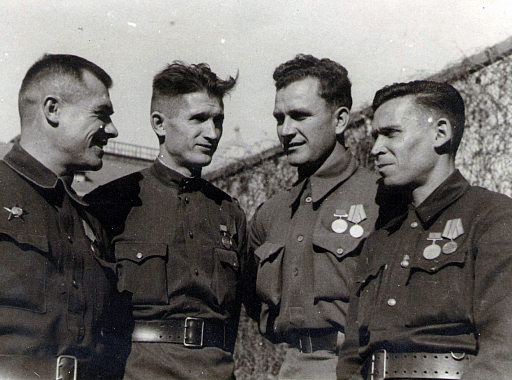
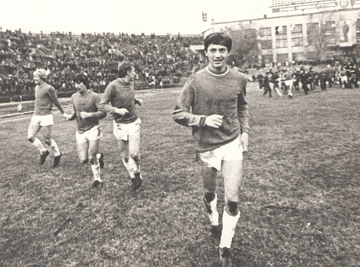
В 1980 году «Ротор» под руководством Шершнева забивает больше всех голов в лиге, не проигрывая ни одного матча дома. Одерживает победы 16 октября над элистинским «Ураланом» — 7:2 и 26 июня с обидчиком прошлого сезона «Соколом» из Саратова — 7:0. «Ротор» окончательно становится домашней командой из 75 голов — 61 забивает дома, при этом пропускает всего 10. Команда занимает итоговое 2 место. Но оказалось что победитель Ростсельмаш нарушил регламент в 4 матчах и ему были засчитаны 4 поражения. В итоге ростовчане опускаются на 3 место а Ротор в финальном турнире второй лиги Ротор занимает 2 место и заканчивает поход за первой лигой. В том году по возрастному требованию вынужденно команду покидают Валерий Ванин, Геннадий Шинкоренко и Радий Рахимов.
В 1981-м Шершневу ставится задача выхода в первую лигу, и он начинает формирование состава. Нападающими становятся Гузенко, Никитин и Васильев. «Ротор» снова забивает больше всех в лиге — 89 мячей, 28 из которых на счету Гузенко. 25 мая волгоградцы обыгрывают «Спартак» из Орла 6:0, а 28 июля выигрывает 6:2 у «Волгаря» из Астрахани. Дома «Ротор» проигрывает «Ростсельмашу» 1:2, ростовская команда временно выходит вперед. Но в итоге «Ротор» поднимается на первую строчку и выходит в первую лигу, победив в финальной «пульке».
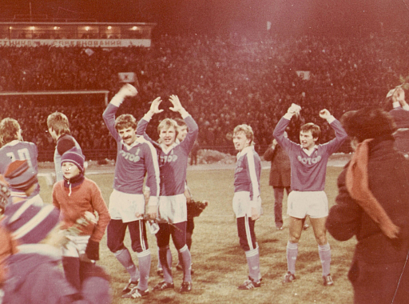
Период ознаменовался плохим стартом в первой лиге: в команду вошли новые игроки, и как следствие, нарушением атмосферы внутри коллектива. «Ротор» проигрывает и играет вничью, и лишь одна победа на счету Шершнева в первой лиге. Тренера снимают посреди сезона. В команду возвращается Файзулин, его команда вновь опустилась во вторую лигу и теперь там он попадал под возрастные рамки.
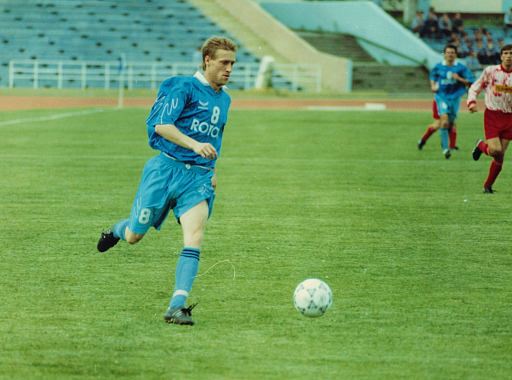
В 83 году Никитин и Суровикин призываются в армию. Службу проходят в СКА Ростов, который в том же году обыгрывает «Ротор» со счетом 6:0, Никитин забивает гол в ворота родной команды. Та победа, наряду с другими победами армейцев позволяют им выйти в высший дивизион. Приход Виктора Королькова и хорошая игра команды не смогли гарантировать ему место главного тренера. Несмотря на то, что первый сезон «Ротор» закончил в середине таблицы, а второй в 1983 году был уже 4-м, Королькова увольняют. Назначенный главным тренером Гроховский приводит команду к четвертому месту.
В 1984-м предпринимается попытка вернуть Белоусова на пост главного тренера. На поле солируют Виктор Васильев и Владимир Файзулин, в строю Александр Гузенко, но команда финиширует в середине таблицы. В тот год в Волгоград впервые приехали болельщики другой команды — краснодарской «Кубани». 25 октября 1984 года на 42 тур первой лиги был организован первый в истории Волгограда выезд в город Ворошиловград на матч «Заря» — «Ротор». По окончании сезона Белоусов уходит, и в команду приглашается Анатолий Константинович Исаев. В клубе Исаева встречает неполная команда из 10 человек, и он начинает строить коллектив на базе одного игрока, Александра Никитина. Со временем Исаев отстраняет от команды Гузенко и Морохина.
Инициатором приглашения в «Ротор» Виктора Прокопенко был Горюнов. В первый год под руководством Прокопенко лучшим бомбардиром становится Никитин с 22 голами. В 1/8 финала Кубка СССР жеребьёвка сводит «Ротор» и чемпиона страны «Динамо» Киев. «Динамо» выигрывает домашний матч в Киеве, а «Ротор» — в Волгограде. В 1/4 финала «Ротор» проигрывает в гостях харьковскому «Металлисту».
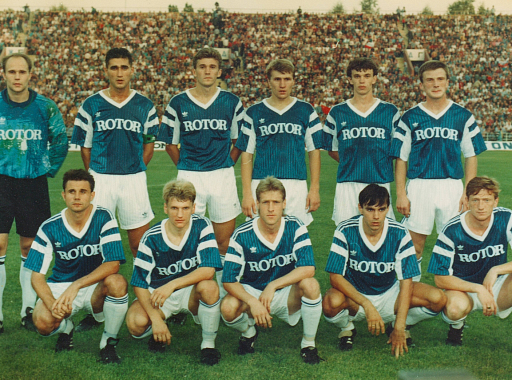
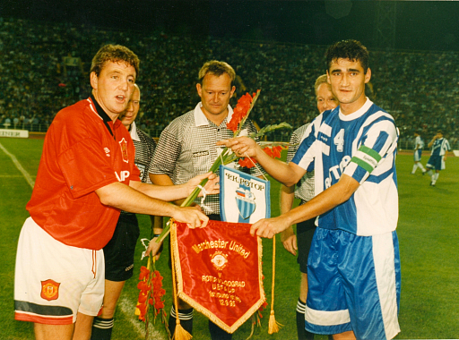
В 1988 году Прокопенко доводит свой коллектив до высшей лиги и уходит из «Ротора» в одесский «Черноморец». Команда не приняла нового тренера, состоялся бунт, и Петр Евгеньевич Шубин, не отыграв ни одного официального матча, покинул команду. На смену ему пришел Александр Александрович Севидов, но по состоянию здоровья покидает команду. Сезон 1990-го года в качестве исполняющего обязанности главного тренера назначается бывший игрок «Ротора» и с 1987 года бессменный тренер команды Владимир Федорович Файзулин. За весь сезон только 4 победы, первая победа Файзулина приходится на 21 тур. За остальные 7 туров «Ротор» выигрывает еще дважды, но это недостаточно, в переходных играх за право играть в Высшей лиге, волгоградцы проигрывают «Локомотиву» из Москвы.
В 1990 году Владимир Горюнов становится президентом клуба, команда переходит на хозрасчет, а главным тренером становится Колтун. Он возвращает «Ротор» в Высшую лигу и уходит из команды. Спартаковец Папаев относился ко всем очень жестко, постоянно унижая игроков и восхваляя «Спартак». Он провел несколько игр, в итоге игроки подняли бунт, и его убрали. Тренером снова стал Файзулин.Тренером стал Сальков. Олег Веретенников, недавно появившийся в команде забивает 19 голов, команда зарабатывает путевку в Кубок УЕФА. Организовывается знаменитое трио в нападении «Ротора»: Веретенников, Валерий Есипов и Владимир Нидергаус. Салькова увольняют. Под руководством Виктора Прокопенко Веретенников стал лучшим бомбардиром в российском чемпионате, забив 25 мячей. Команда становилась серебряным призером чемпионата России в 1997 году, бронзовым призером чемпионата России в 1996 году, финалистом Кубка России 1994/95.
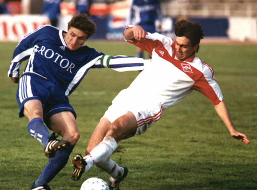
«Ротор» — один из главных клубов 90-х за пределами Москвы. На стадионе в Волгограде почти всегда был аншлаг, а в городе сходили с ума по футболистам. Ниже находятся фото фанатов легендарного сине-голубого клуба.
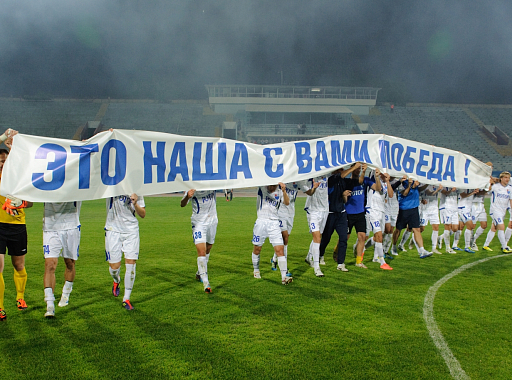
Еще в 1999 году команда занимает провальное, 13-е место, в чемпионате. Прокопенко покидает команду, на его смену приходит известный по работе в московском «Спартаке» Георгий Ярцев, его по ходу сезона сменяет Евгений Кучеревский, новыми лидерами клуба стали Андрей Кривов и Валерий Есипов. Примерно с 2000 года начинается постепенный закат волгоградского клуба, по окончании сезона 2000 Кривов покидает команду. Из-за постоянных трудностей с финансированием некогда самобытная команда — «гроза авторитетов» за несколько лет скатилась в разряд аутсайдеров.
В чемпионате 2000 года — «Ротор» только одиннадцатый, в 2001 — 10 место, в 2002 — 9 место, в 2003 — 12 место. Тренерская чехарда, многочисленные проблемы приводят к тому, что в 2004 году «Ротор», заняв 16, последнее место в чемпионате, покинул премьер-лигу, а в начале 2005 года был лишен статуса профессионального клуба. В сезоне-2005 во Втором дивизионе в зоне «Юг» играл ФК «Ротор-2», который раньше фактически был фарм-клубом «Ротора». В 2006 году «Ротор» был возрожден на базе команды «Ротор-2». В 2006-2009 годах возрожденный «Ротор» выступал во втором дивизионе.
В 2009 году президентом клуба стал Олег Михеев, а Владимир Горюнов перешел на должность генерального директора. 31 июля 2009 года президентом клуба Михеевым было принято решение о приостановке участия «Ротора» в играх сроком на полгода. Приостановление деятельности футбольного клуба, по словам Михеева, было связано с тем, что вокруг «Ротора» существовала блокада: наложены аресты на имущество и счета клуба. «Ротор» снялся с первенства Второго дивизиона после 20-го тура зоны «Юг» (в котором сыграл на выезде вничью с «Ангуштом» — 1:1; занимал 13-е место), в оставшихся матчах ему были засчитаны технические поражения.
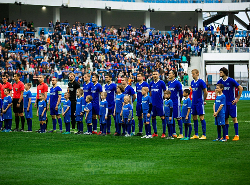
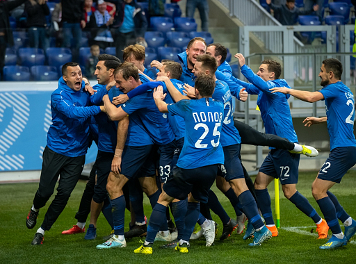
С 2010 года «Ротор» выступал в первом дивизионе. Это стало возможным в результате заявки команды ФК «Волгоград», которая в сезоне-2009 финишировала на третьем месте в южной зоне второго дивизиона, а зимой подала заявку на участие в первом дивизионе — взамен отказавшегося от этого права «Витязя» и отклонившего предложение ПФЛ «Ставрополя». О создании и выдвижении новой единой команды от региона было заявлено 8 февраля 2010 года на пресс-конференции Главы Администрации Волгоградской области Анатолия Бровко, президента ПФЛ Николая Толстых и президента клуба «Ротор» Олега Михеева. В итоге футбольный клуб «Волгоград» был переименован в «Ротор» и включен в число участников первого дивизиона.
Решение о возрождении команды вызвало широкий резонанс и одобрение в прессе и среди болельщиков различных футбольных клубов России. Однако в первом же сезоне «Ротор» вылетел из Первого дивизиона. Но несмотря на это, в сезоне 2011/2012, который команда должна была провести во Втором дивизионе, руководство клуба поставило перед командой задачу повышения в классе. Главным тренером стал Валерий Бурлаченко, его помощником Олег Веретенников. 19 мая 2012 года «Ротор» досрочно обеспечил себе выход в ФНЛ. В сезоне 2012/2013 «Ротор» выступает в ФНЛ.
30 июля 2013 года новым главным тренером клуба стал Игорь Ледяхов. После поражения в матче 16-го тура первенства ФНЛ от «Арсенала» (0:4) в Туле приняло решение расстаться с Ледяховым. 3 октября 2013 года на эту должность был назначен Федор Щербаченко. По окончании сезона 2013/14 руководство клуба приняло решение сняться с первенства ФНЛ. Это было связано с отказом правительства области спонсировать клуб, со ссылкой на малый бюджет области и города. Впоследствии спонсор клуба торговая сеть «Радеж» и лично ее основатель Юрий Сударев выделили клубу 1 миллион рублей, чтобы подать заявку на участие во втором дивизионе (зона «Юг»)
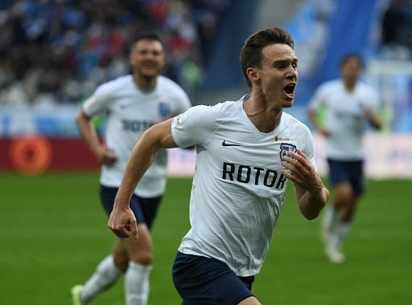
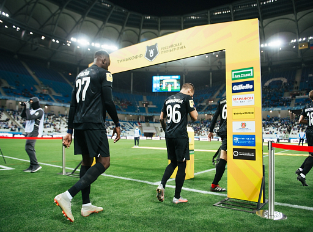
В апреле 2015 года администрацией Волгоградской области было принято решение снять ФК «Ротор» с соревнований Второго дивизиона и ликвидировать юридическое лицо ГАУ ВО «ФК Ротор» в связи со многомиллионными долгами. Вместо него в структуре Волгоградского колледжа олимпийского резерва была создана команда «Ротор-Волгоград», взявшая с сезона 2015 старт в Первенстве Третьего дивизиона зоны «Черноземье». В 2015 году «Ротор-Волгоград» досрочно завоевал первое место в турнире «Черноземья», и, после успешного прохождения процедуры лицензирования РФС, команда с сезона 2016-2017 выступала на профессиональном уровне. В январе 2016 года исполняющим обязанности главного тренера команды был назначен Лев Иванов. Это назначение вызвало неоднозначную реакцию болельщиков «Ротора», которые начали сбор подписей против кандидатуры Иванова и за назначение главным тренером команды Олега Веретенникова.
В мае 2018 года новым главным тренером команды стал Роберт Евдокимов, а в октябре 2018 года Олег Веретенников вошел в тренерский штаб «Ротора». По итогу сезона 2019/2020 ФНЛ, досрочно прекращенного в марте 2020 года из-за эпидемии COVID-19, команда получила право вернуться в Премьер-лигу.
«Ротор» стал 15-м в итоговой таблице Российской премьер-лиги и вернулся в ФНЛ, где проведёт сезон 2021/2022.
По результатам сезона 2021/2022 клуб не смог удержаться в ФНЛ и сезон 2022/2023 проведёт во Второй лиге.
1929
Был основан клуб «Тракторостроитель»
1975—2004
клуб принял название «РОТОР»
с 2018
Клуб носит название СК «Ротор»